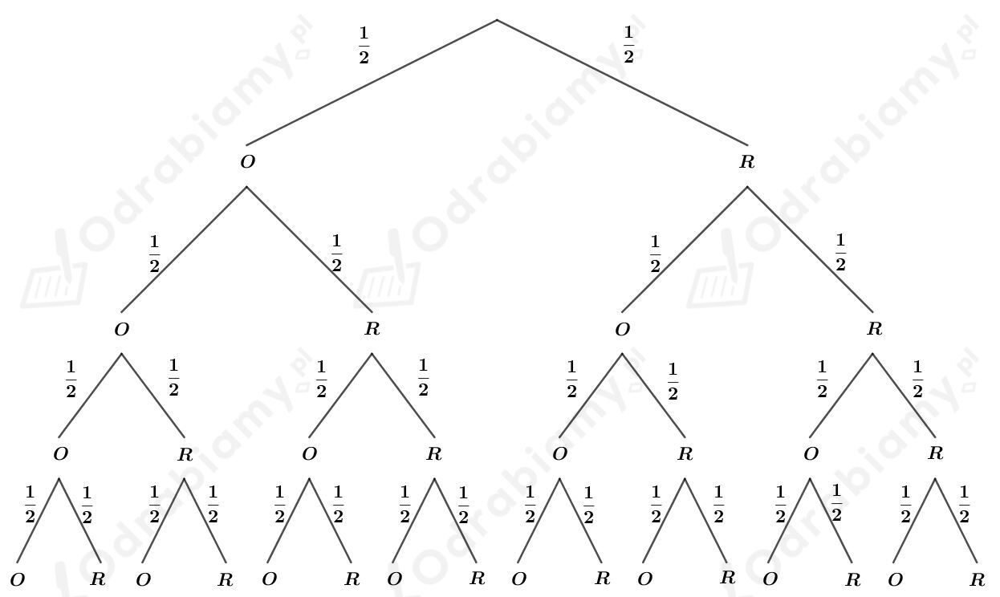

| Wzór Bernoulliego W schemacie n prób Bernoulliego prawdopodobieństwo otrzymania k sukcesów wyraża się wzorem gdzie p oznacza prawdopodobieństwo sukcesu, a q - prawdopodobieństwo porażki w pojedynczej próbie (q=1-p). |
Gramy z równorzędnym przeciwnikiem w szachy. Wyniki kolejnych partii są niezależne. Prawdopodobieństwo wygranej w pojedynczej partii wynosi p=1/2, a porażki wynosi q=1/2.
Korzystając ze wzoru Bernoulliego, wyznaczmy prawdopodobieństwo wygrania trzech partii z pięciu. Mamy:
Korzystając ze wzoru Bernoulliego, wyznaczmy prawdopodobieństwo wygrania czterech partii z siedmiu. Mamy:
Zauważmy, że
Odp. Bardziej prawdopodobne jest wygranie trzech partii z pięciu.
| Wzór Bernoulliego W schemacie n prób Bernoulliego prawdopodobieństwo otrzymania k sukcesów wyraża się wzorem gdzie p oznacza prawdopodobieństwo sukcesu, a q - prawdopodobieństwo porażki w pojedynczej próbie (q=1-p). |
a)
Czterokrotny rzut monetą to schemat Bernoulliego, w którym prawdopodobieństwo sukcesu (czyli wyrzucenie orła) w pojedynczej próbie wynosi p=1/2, a prawdopodobieństwo porażki jest równe q=1/2.
Korzystając ze wzoru Bernoulliego, wyznaczmy prawdopodobieństwo otrzymania dwóch orłów w czterokrotnym rzucie monetą. Mamy:
Odp. Prawdopodobieństwo otrzymania dwóch orłów w czterokrotnym rzucie monetą wynosi 3/8.
b)
Korzystając z drzewa, wyznaczymy prawdopodobieństwo otrzymania dwóch orłów w czterokrotnym rzucie monetą.
Rysunek:

Sprzyjające gałęzie: OORR, OROR, ORRO, ROOR, RORO, RROO.
Liczba sprzyjających gałęzi: 6
Liczba wszystkich gałęzi: 16
Zatem obliczymy prawdopodobieństwo otrzymania dwóch orłów w czterokrotnym rzucie monetą. Mamy:
Odp. Prawdopodobieństwo otrzymania dwóch orłów w czterokrotnym rzucie monetą wynosi 3/8.
| Wzór Bernoulliego W schemacie n prób Bernoulliego prawdopodobieństwo otrzymania k sukcesów wyraża się wzorem gdzie p oznacza prawdopodobieństwo sukcesu, a q - prawdopodobieństwo porażki w pojedynczej próbie (q=1-p). |
a)
Sześciokrotny rzut monetą to schemat Bernoulliego, w którym prawdopodobieństwo sukcesu (czyli wyrzucenie orła) w pojedynczej próbie wynosi p=1/2, a prawdopodobieństwo porażki jest równe q=1/2.
Korzystając ze wzoru Bernoulliego, wyznaczmy prawdopodobieństwo otrzymania czterech orłów w sześciokrotnym rzucie monetą. Mamy:
Odp. Prawdopodobieństwo otrzymania czterech orłów w sześciokrotnym rzucie monetą wynosi 15/64.
b)
Sześciokrotny rzut monetą to schemat Bernoulliego, w którym prawdopodobieństwo sukcesu (czyli wyrzucenie orła) w pojedynczej próbie wynosi p=1/2, a prawdopodobieństwo porażki jest równe q=1/2.
Wiemy już, że prawdopodobieństwo otrzymania czterech orłów w sześciokrotnym rzucie monetą wynosi:
Korzystając ze wzoru Bernoulliego, wyznaczmy prawdopodobieństwo otrzymania pięciu orłów w sześciokrotnym rzucie monetą. Mamy:
Korzystając ze wzoru Bernoulliego, wyznaczmy prawdopodobieństwo otrzymania sześciu orłów w sześciokrotnym rzucie monetą. Mamy:
Wyznaczmy prawdopodobieństwo wyrzucenia co najmniej czterech orłów w sześciokrotnym rzucie monetą. Mamy:
Odp. Prawdopodobieństwo wyrzucenia co najmniej czterech orłów w sześciokrotnym rzucie monetą wynosi 11/32.
| Wzór Bernoulliego W schemacie n prób Bernoulliego prawdopodobieństwo otrzymania k sukcesów wyraża się wzorem gdzie p oznacza prawdopodobieństwo sukcesu, a q - prawdopodobieństwo porażki w pojedynczej próbie (q=1-p). |
Rzucamy n razy monetą. Niech A oznacza zdarzenie polegające na otrzymaniu co najmniej jednego orła w n rzutach. Zatem A' oznacza zdarzenie polegające na tym, że nie otrzymamy żadnego orła w n rzutach.
Korzystając ze wzoru Bernoulliego wyznaczymy prawdopodobieństwo zdarzenia A'. Mamy:
Zatem
a)
Wyznaczymy, dla jakich wartości n, prawdopodobieństwo otrzymania co najmniej jednego orła jest większe od 0,9. Otrzymujemy zatem nierówność:
Skoro 23=8 oraz 24=16 mamy:
b)
Wyznaczymy, dla jakich wartości n, prawdopodobieństwo otrzymania co najmniej jednego orła jest większe od 0,99. Otrzymujemy zatem nierówność:
Skoro 26=64 oraz 27=128 mamy:
c)
Wyznaczymy, dla jakich wartości n, prawdopodobieństwo otrzymania co najmniej jednego orła jest większe od 0,999. Otrzymujemy zatem nierówność:
Skoro 29=512 oraz 210=1024 mamy:
d)
Wyznaczymy, dla jakich wartości n, prawdopodobieństwo otrzymania co najmniej jednego orła jest większe od 0,9999. Otrzymujemy zatem nierówność:
Skoro 213=8192 oraz 214=16384 mamy:
| Wzór Bernoulliego W schemacie n prób Bernoulliego prawdopodobieństwo otrzymania k sukcesów wyraża się wzorem gdzie p oznacza prawdopodobieństwo sukcesu, a q - prawdopodobieństwo porażki w pojedynczej próbie (q=1-p). |
Rzucamy cztery razy kostką.
a)
Za sukces przyjmujemy otrzymanie szóstki w rzucie kostką, a za porażkę przyjmujemy otrzymanie jakiejkolwiek innej liczby oczek. Wtedy prawdopodobieństwo sukcesu wynosi p=1/6, a prawdopodobieństwo porażki wynosi q=5/6.
Korzystając ze wzoru Bernoulliego, wyznaczmy prawdopodobieństwo otrzymania dwóch szóstek w czterech rzutach. Mamy:
Odp. Prawdopodobieństwo otrzymania dwóch szóstek w czterech rzutach wynosi 25/216.
b)
Za sukces przyjmujemy otrzymanie szóstki w rzucie kostką, a za porażkę przyjmujemy otrzymanie jakiejkolwiek innej liczby oczek. Wtedy prawdopodobieństwo sukcesu wynosi p=1/6, a prawdopodobieństwo porażki wynosi q=5/6.
Korzystając ze wzoru Bernoulliego, wyznaczmy prawdopodobieństwo nie otrzymania żadnej szóstki. Mamy:
Korzystając ze wzoru Bernoulliego, wyznaczmy prawdopodobieństwo otrzymania jednej szóstki. Mamy:
Wiemy już, że prawdopodobieństwo otrzymania dwóch szóstek wynosi:
Wyznaczmy prawdopodobieństwo otrzymania co najwyżej dwóch szóstek. Mamy:
Odp. Prawdopodobieństwo otrzymania co najwyżej dwóch szóstek w czterech rzutach wynosi 425/432.
|
Wzór Bernoulliego W schemacie n prób Bernoulliego prawdopodobieństwo otrzymania k sukcesów wyraża się wzorem gdzie p oznacza prawdopodobieństwo sukcesu, a q - prawdopodobieństwo porażki w pojedynczej próbie (q=1-p). |
Rzucamy pięć razy kostką.
a)
Za sukces przyjmujemy otrzymanie szóstki w rzucie kostką, a za porażkę przyjmujemy otrzymanie jakiejkolwiek innej liczby oczek. Wtedy prawdopodobieństwo sukcesu wynosi p=1/6, a prawdopodobieństwo porażki wynosi q=5/6.
Korzystając ze wzoru Bernoulliego, wyznaczmy prawdopodobieństwo otrzymania trzech szóstek. Mamy:
Odp. Prawdopodobieństwo otrzymania trzech szóstek w pięciu rzutach wynosi 125/3888.
b)
Korzystając ze wzoru Bernoulliego, wyznaczmy prawdopodobieństwo, że w pięciokrotnym rzucie wypadła liczba oczek większa od 4, czyli wypadła 5 lub 6. Mamy:
Korzystając ze wzoru Bernoulliego, wyznaczmy prawdopodobieństwo, że raz wypadła liczba oczek większa od 4:
Wyznaczmy prawdopodobieństwo, że co najmniej dwa razy wypadła liczba oczek większa od 4. Mamy:
Odp. Prawdopodobieństwo, że co najmniej dwa razy wypadnie liczba oczek większa od 4 wynosi 131/243.
| Wzór Bernoulliego W schemacie n prób Bernoulliego prawdopodobieństwo otrzymania k sukcesów wyraża się wzorem gdzie p oznacza prawdopodobieństwo sukcesu, a q - prawdopodobieństwo porażki w pojedynczej próbie (q=1-p). |
Rzucamy trzykrotnie dwiema kostkami.
a)
Wypiszmy zdarzenia, dla których suma oczek na dwóch kostkach jest większa od 10. Mamy:
Obliczmy prawdopodobieństwo, że suma oczek na dwóch kostkach jest większa od 10. Mamy:
Korzystając ze wzoru Bernoulliego wyznaczmy prawdopodobieństwo, że co najmniej dwa razy suma oczek będzie większa od 10, czyli dwa razy lub trzy razy. Mamy:
Odp. Prawdopodobieństwo, że co najmniej dwa razy suma oczek będzie większa od 10 wynosi 17/864.
b)
Wypiszmy zdarzenia, dla których suma oczek na dwóch kostkach jest równa 6. Mamy:
Obliczmy prawdopodobieństwo, że suma oczek na dwóch kostkach jest równa 6. Mamy:
Korzystając ze wzoru Bernoulliego wyznaczmy prawdopodobieństwo, że co najmniej dwa razy suma oczek będzie równa 6, czyli dwa razy lub trzy razy. Mamy:
Odp. Prawdopodobieństwo, że co najmniej dwa razy suma oczek będzie równa 6 wynosi 1225/23328.